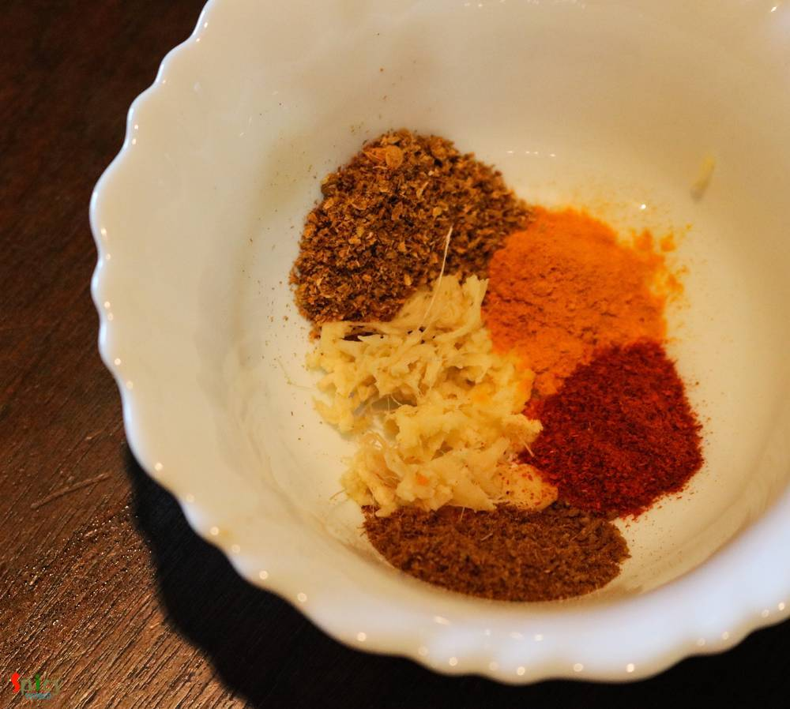

Simple and Easy Recipes
Chanar Dalna / Aloo Paneer curry
© 2016 Spicy World, Published on: Aug 11, 2016
Chanar Dalna is a very hearty vegetarian preparation with simple ingredients. My mom used to serve this curry with 'Luchi' and the pair was heavenly. 'Chana' means curdled milk or homemade paneer and 'Dalna' means curry. Both of them are Bengali words. You can definitely make this dalna on any puja / vrat days as they are onion and garlic free. I have already shared 'chanar kalia' recipe with you all, but this one is much more simpler and hassle free than that. Try this recipe in your kitchen and enjoy a great lunch with your family.

Ingredients
- 6 - 10 pieces of chanar cube / homemade paneer cubes.
- 1 potato, cut into cubes.
- 1 tomato, chopped.
- 3 green chilies.
- 1 Teaspoon of ginger paste.
- Spice powder (1 Teaspoon of turmeric powder, 1 Teaspoon of red chilli powder, Half Teaspoon of cumin powder and 1 Teaspoon of coriander powder).
- Pinch of hing / asafoetida.
- Salt and sugar.
- 1/4th cup of milk.
- Whole spices (3 green cardamoms, 3 cloves, 1 Teaspoon of cumin seeds, half Teaspoon of crushed coriander seeds, 1 bay leaf).
- Warm water.
- 3 Tablespoons of oil.
- 1 Teaspoon of ghee.
- A big pinch of garam masala.


Steps
Heat the oil in a pan.
Fry the chana / paneer cubes in hot oil for 2 minutes.
Now remove those cubes from oil and immediately soak them in some warm water. In this way the cubes will remain soft.
Now fry the potatoes in that oil with pinch of salt and turmeric powder for 4 minutes. Then remove them from oil.
Add all of the spice powder, ginger paste, pinch of salt and sugar in a bowl. Now add 3 Tablespoons of water in that and mix it. Keep aside.
Heat the remaining oil, add hing and saute the whole spices for few seconds.
Add that prepared spice paste and mix well for 3 minutes on medium flame.

When the oil starts separating, add the chopped tomatoes. Cook until they become mushy.
Add the fried potatoes and green chilies. Mix well for few minutes.
Now add the milk, paneer and paneer soaked water, some salt and sugar. Cook until the potatoes become soft.
Lastly add the ghee and garam masala powder. Mix and turn off the heat.
Your chanar dalna is ready ...
Serve this hot with some steamed rice or luchi / paratha / roti ..
")